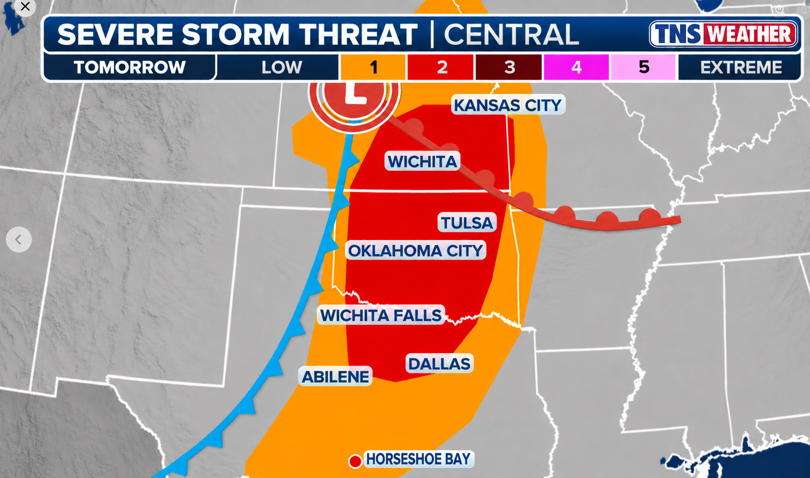
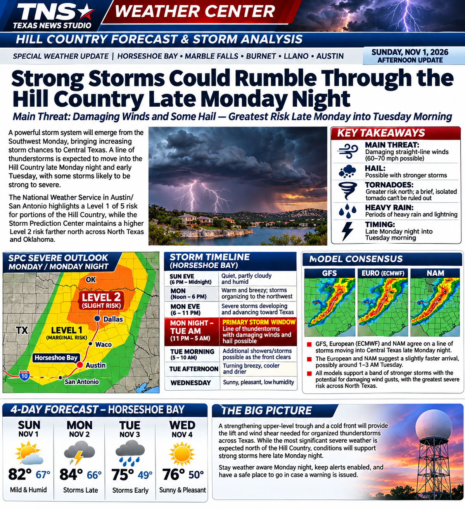

HILL COUNTRY STORM WATCH: Strong Storms Possible Late Monday Night Into Tuesday

Sunday, November 1, 2026 — Afternoon forecast update. A strong storm system will move from the Southwest into the Plains on Monday. While the greatest organized severe-weather threat is expected farther north in Oklahoma and North Texas, a broken line of strong thunderstorms may reach Horseshoe Bay, Marble Falls, Burnet and Llano late Monday night into Tuesday morning. For our immediate area, damaging straight-line wind is the primary concern, with some hail possible. This is a forecast, not a warning.
Forecast: Sunday evening through Wednesday
Sunday night: Quiet, partly cloudy and humid, with temperatures gradually falling into the upper 60s. Some low clouds or patchy fog could develop late.
Monday: Morning clouds give way to intervals of sunshine. It will feel unusually warm and humid for early November, with an afternoon high near 84°F. Southerly breezes increase ahead of the storm system. Most of the day should remain dry in Horseshoe Bay.
Monday night into Tuesday morning: This is the period to watch. A cold front will advance across Texas, accompanied by a broken line of showers and thunderstorms. Some storms could produce strong, locally damaging gusts and hail. The line may be uneven, so one community could see a substantial thunderstorm while another receives only brief showers.
Tuesday: Showers and thunderstorms may linger into the morning as the front crosses Central Texas. Conditions should turn breezy and drier as the front passes, with an afternoon high around 75°F. Temperatures fall toward 49°F Tuesday night.
Wednesday: A much quieter day: mostly sunny, lower humidity, a cool morning near 50°F and a pleasant afternoon near 76°F.

Storm arrival timeline — Central Standard Time
Monday, noon–6 p.m.: Storms begin organizing well northwest of the Hill Country, mainly along a dryline and advancing front in western Oklahoma and northwest Texas. Horseshoe Bay remains warm and generally dry.
Monday, 6–11 p.m.: Thunderstorms spread east across North Texas, with an increasing chance of a more organized line. Residents of the Highland Lakes should check updated forecasts before going to bed.
Monday, 11 p.m.–Tuesday, 5 a.m.: Main storm-watch window for the Hill Country. Forecast guidance suggests a possible initial local thunderstorm period around 1–3 a.m.; timing could shift several hours depending on storm formation and movement.
Tuesday, 5–10 a.m.: Additional showers or embedded storms are possible as the cold front moves through. Conditions gradually improve after frontal passage.
What the Storm Prediction Center says
The Storm Prediction Center's 11:32 a.m. CST Sunday Day 2 outlook identifies a Slight Risk (Level 2 of 5) across parts of North Texas, Oklahoma, Kansas and Missouri. Scattered severe storms are forecast there late Monday afternoon into the evening, with damaging winds and a few tornadoes the main hazards. That higher northern Plains threat should not be automatically transferred south to Horseshoe Bay.
For parts of the Hill Country and areas along and northwest of Interstate 35, the Austin/San Antonio National Weather Service discussion identifies a Marginal Risk (Level 1 of 5). Forecasters expect sufficient wind shear and instability for a few isolated strong or severe storms in the overnight frontal line. Damaging winds are the primary concern locally; some large hail is possible.
Why storms may become strong
A strengthening upper-level trough will move toward the Plains as a surface low deepens to the north. A cold front and dryline will encounter moist Gulf air. Strong winds aloft and changing wind direction with height favor organized thunderstorms. In the main severe-weather corridor farther north, SPC discusses 60–80 knot midlevel winds and effective shear of roughly 45–60 knots, supportive of supercells before storms evolve into a line.
Farther south, the Austin/San Antonio forecast discussion anticipates about 30–40 knots of deep-layer shear and enough instability for isolated severe thunderstorms despite the nighttime timing. The most plausible local severe mode is a broken line or squall-line segment capable of sudden damaging wind gusts. An isolated tornado cannot be completely ruled out in a strongly sheared line, but it is not the principal forecast hazard for Horseshoe Bay.
Model and regional forecast-office notes
High-resolution models: NWS Fort Worth reports that convection-allowing models generally support storms transitioning into a broken line as they move east overnight. NWS San Angelo also notes model signals for scattered to numerous thunderstorms along the advancing front Monday afternoon and night, with hail and damaging wind concerns.
European AI guidance: SPC discusses the ECMWF AIFS ensemble's depiction of a secondary low near the Kansas–Oklahoma border, which could intensify wind shear and tornado potential farther north. This is not evidence of a comparable tornado threat at Horseshoe Bay.
GFS, NAM and conventional ECMWF: Independently verified run-by-run output was not available for this report. The forecast therefore relies on the published SPC and NWS operational synthesis rather than claiming specific unverified model solutions. No storm-chaser forecast has been attributed without verification.
NWS Norman/SPC: Focus on the organized severe threat over the southern and central Plains. NWS Fort Worth: Storms developing to the west Monday evening, potentially organizing into a broken line overnight. NWS San Angelo: Scattered to numerous storms late Monday, with hail and wind possible. NWS Austin/San Antonio: Overnight frontal storms in the Hill Country, locally strong to severe, then drier conditions.
Chief forecaster's assessment
The key forecast question for the Highland Lakes is whether storms maintain their intensity as they move south and east overnight. Nighttime cooling often reduces surface instability, but a strengthening wind field can still support damaging gusts in a line of storms. Confidence is relatively high that a front will cross the region; confidence is lower in the exact local storm arrival time and how many communities will experience severe weather.
Bottom line: Stay weather-aware late Monday night into Tuesday morning. Keep phone emergency alerts enabled, charge devices before bed and know where to shelter if a warning is issued. By Tuesday afternoon, improving weather should be underway, followed by a fine fall Wednesday.
Sources checked November 1: SPC Day 2 Outlook; NWS Austin/San Antonio forecast discussion; NWS Fort Worth and San Angelo discussions. Forecast timing and hazards are subject to change. The TNS map above is illustrative, not a live SPC product.